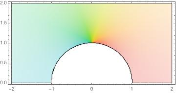

Section 1.9 Conformal maps and harmonic equations
Subsection 1.9.1 Vector fields and harmonic functions
We'll recall some definitions. Let \(A\) be a domain in \(\R^2\) (which we will identify with \(\C\) when in the analytic setting). A scalar field on \(A\) is a function \(u(x, y): A \to \R\) - in this context, we'll think of such a function as assigning a value to each point in \(A\text{.}\)
A vector field on \(A\) is a function \(V:A \to \R^2\) that assigns to each point in \(A\) a vector \(V(x,y) = (v_1(x,y), v_2(x,y))\text{.}\) If \(u\) happens to be continuously differentiable, then a natural vector field associated with \(u\) is given by the gradient field \(\nabla u = \operatorname{grad} u = \ip{u_x}{u_y}\text{.}\) Continuous gradient fields have the property that line integrals in the field are path independent (which should remind you of the Cauchy-Goursat theorem). A function \(u\) with continuous gradient field \(\nabla u\) is called a potential function.
There is useful geometry connecting potentials and their gradient fields. Recall that a level curve for \(u\) is the set of points \((x,y) \in A\) with \(u(x,y) = C\) for constants \(C \in \R\text{.}\) Given that the gradient vectors measure the direction of greatest change in a scalar field, it shouldn't be surprising that the gradient vector at a point in \(A\) is orthogonal to the level curve through the point. If the vector field varies continuously, we might expect that we can trace flow lines through \(A\text{.}\) A flow line (say parametrized by \(\gamma\)) should have the property that at every point \((x,y) \in A\text{,}\) \(\gamma\dd(t) = \nabla u(x,y)\text{.}\) Typically, the problem of computing flows lines explicitly is hard. However, for certain functions \(u\text{,}\) this problem turns out to be much easier.
In particular, if \(u\) is harmonic, the associated gradient field has some very nice features. First, since \(u\) is \(C^2\text{,}\) it isn't hard to calculate that the curl of \(\operatorname{grad} u\) is zero. (One can do this by extending \(\gd u\) to a function in \(\R^3\) by putting 0 in the \(z\) coordinate, computing \(\nabla \times \nabla u\text{,}\) and applying Clairaut's theorem.)
Second, computing the divergence of \(u\text{,}\) we get
\begin{equation*}
\operatorname{div} \gd u = \nabla \cdot \nabla u = 0,
\end{equation*}
and so \(u\) is also divergence free.
Because the gradient field arising from a harmonic is function is so nice, we get a magical solution to the flow line problem.
Since a harmonic function \(u\) and its harmonic conjugate \(u\ad\) form the real and imaginary parts of analytic functions, we see immediately the connection to ideas from complex analysis. Indeed, the function
\begin{equation*}
f(z) = u(x,y) + i u\ad(x,y)
\end{equation*}
is called a complex potential function.
We now consider the problem of finding a harmonic function on a domain that agrees with some sort of given boundary conditions. Recall that a harmonic function \(u\) on a domain \(A \subset \R^2\) is a \(C^2\) function that satisfies Laplace's equation; that is, \(u\) is harmonic on \(A\) if
\begin{equation*}
\nabla^2 u = \frac{\partial^2 u}{\partial x^2} + \frac{\partial^2 u}{\partial y^2} = 0.
\end{equation*}
Boundary value problems associated with harmonic functions come with two varieties of standard conditions.
- Dirichlet problem: we specify the values of \(u\) at the boundary of \(A\text{.}\)
- Neumann problem: we specify the derviative of \(u\) at the boundary of \(A\text{,}\) in the sense that we specify\begin{equation*} \frac{\partial u}{\partial n} = \operatorname{grad} u \cdot n. \end{equation*}
Subsection 1.9.2 The Dirichlet problem on the disk
It turns out that there is a very nice solution to the Dirichlet problem in the case that the domain \(A\) is a disk. A famous result called the Poisson integral theorem gives us the desried solution. Harmonic functions have a mean value property much like Gauss's mean value theorem for analytic functions. We'll restrict our attention to the case of the unit disk (which implies the result for any other disk).
Theorem 1.9.2. Harmonic mean value property.
Suppose that \(u\) is harmonic in a neighborhood of the unit disk. Then
\begin{equation*}
u(0) = \frac{1}{2pi} \int_0^{2\pi} u(e^{i\theta}) \, d\theta.
\end{equation*}
Poisson's formula extends the mean value property to give the value of \(u\) at every point in the disk in terms of the values of \(u\) on the boundary.
Theorem 1.9.3. Poisson integral formula.
Assume that \(u\) is harmonic on a neighborhood of the unit disk. Then for any \(z \in \D\text{,}\)
\begin{equation*}
u(z) = \frac{1}{2\pi} \int_0^{2 \pi} u(e^{i\theta}) \frac{1- \abs{z}^2}{\abs{e^{i\theta} - z}^2}\,d\theta.
\end{equation*}
The proof of the theorem above goes essentially by applying the conformal automorphism of \(\D\) that takes \(z \to 0\text{.}\) Then, we apply the harmonic mean value property and chase through the effect on the integral of the conformal map.
The solution to the Dirichlet problem is basically a converse to Poisson's formula - it asserts that given a function \(u_0\) continuous on the unit circle \(T\text{,}\) we can construct a unique harmonic function \(u\) on \(\D\) that agrees with \(u_0\) on the boundary.
Theorem 1.9.4. Solution to Dirichlet problem on the disk.
Let \(u_0\) be a continuous function on \(\T\text{.}\) Then there exists a unique harmonic function \(u\) on \(\D\) that extends continuously to \(u_0\) on \(\T\text{.}\) The formula for \(u\) with \(z \in \D\) is
\begin{equation*}
u(z) = \frac{1}{2\pi} \int_0^{2\pi} u_0(e^{i\theta}) \frac{1 - \abs{z}^2}{\abs{e^{i\theta} - z}^2} \, d\theta.
\end{equation*}
Subsection 1.9.3 Neumann conditions
Note that while we have a standard solution to the Dirichlet problem on the disk for any continuous function \(u\) on the circle bounding the disk, we have much stricter requirements for our choice of \(u\) in the Neumann case.
Suppose that we have a harmonic function \(u\) on \(A\) that extends to a differentiable function at the boundary \(\partial A\) (we may as well assume that the boundary is a simple closed and piecewise continuous, parametrized by the curve \(\gamma\)). Let \(\phi\) denote the derivative \(\phi = \frac{\partial u}{\partial n}\) where \(n\) is the normal vector to the boundary. Then by the divergence formulation of Green's theorem, we get
\begin{align*}
\int_\gamma \frac{\partial u}{\partial n} \, ds \amp= \int_\gamma (\gd u)\cdot n \, ds\\
\amp= \int_A \operatorname{div}\gd u\, dxdy\\
\amp= \int_A \nabla^2 u \, dx dy\\
\amp= 0.
\end{align*}
Thus we consider boundary functions \(\phi\) with \(\int_\gamma \phi = 0.\) In the context of these notes, we actually will restrict ourselves to the simplest case, \(\partial u/\partial n = 0\text{,}\) which corresponds to zero-flux across the boundary, a condition known as an insulated boundary. This means that flows will be parallel the the boundary in this case (which corresponds to the simple case of uniform fluid flow, e.g.).
Subsection 1.9.4 Standard solutions and conformal maps
Our essential approach will be to construct a standard solution that describes some physical situation and then conformally map it to more interesting regions, which will also transform the solution.
As a first standard solution, consider the case of a fluid that is incompressible and nonviscous. If we also assume that the flow is given by an integrable vector field \(V\) so that \(\gd V = u\) for a potential function \(\phi\text{,}\) then we have that \(\phi\) is harmonic. The conjugate \(\psi\) of \(\phi\) is called a stream function. Consider the vector field \(V\) given by
\begin{equation*}
V(x,y) = (\alpha, 0).
\end{equation*}

The vector field \(V\) is the gradient of the potential function \(\phi = \alpha x\text{,}\) which in turn is the real part of the complex function \(f(z) = \alpha z\text{.}\) Since \(\phi\) is the real part of an analytic function, it is harmonic. Further, as the flow is parallel to the boundary, the Neumann condition \(\partial \phi/\partial n = 0 \) is met.
A map that first arose in the early study of airfoils is the Joukowsky transform 1 , defined by
\begin{equation*}
T(z) = z + \frac{1}{z}\text{.}
\end{equation*}
An exercise will ask you to look at this map more closely. For the purposes of our example, this map transforms the upper half plane with half of a unit disk removed conformally to the upper half plane.

We'll need the following highly useful interaction between conformal maps and harmonic functions.
Proposition 1.9.7.
If \(u\) is a harmonic function on a domain \(A\) and \(T\) is a conformal map from a domain \(B\) to \(A\text{,}\) then \(u \circ T\) is harmonic on \(B\text{.}\)How can we blend all of these ingredients together? We've already seen that \(\phi(x,y) = \alpha x\) is a solution to Laplace's equation on the upper half plane satisfying the condition that \(\partial \phi/\partial n = 0\) on the real axis. Lifting to the complex potential \(\Phi(z) = \alpha z\text{,}\) we compose with the map \(T(z) = z + 1/z\) to get a new function
\begin{equation*}
F(z) = \phi \circ T = \alpha(z + \frac{1}{z})
\end{equation*}
that is analytic on the upper half plane with the unit disk removed. The real and imaginary parts of \(F\) give harmonic functions that describe the equipotentials and the flow lines for the transformation of uniform flow under \(T\) (the geometry is preserved by conformality). The image below shows the effect on the flow lines of the transformation.
An exercise will ask you to evaluate this more carefully.
Subsection 1.9.5 Half plane solutions
In the Dirichlet setting, we already have the Poisson integral formula (which can be applied to any domain conformally equivalent to a disk). However, this is often way more than necessary, as frequently boundary conditions are specified as constant on a finite number of pieces of the boundary. In this sort of case, a standard solution is most easily defined on the upper half plane.
We want to find a harmonic function \(u\) on the upper half plane with the boundary condition that \(u(x,0)=1\) when \(x \lt 0\) and \(u(x,0) = 0\) when \(x > 0\text{.}\)
If \(z = x + iy\text{,}\) one such solution is the function \(u = \frac{1}{\pi} \theta\) where \(\theta = \arg z = \arctan y/x\text{.}\) Notice that
\begin{equation*}
\frac{1}{\pi} \arg z = \RE(\frac{1}{i \pi} \log z),
\end{equation*}
and so \(u\) is harmonic.

en.wikipedia.org/wiki/Joukowsky_transform